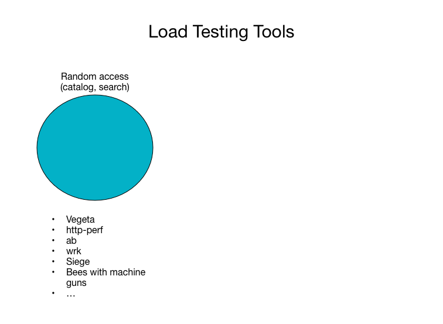
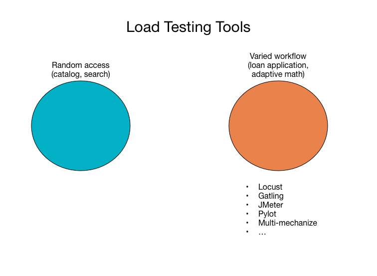
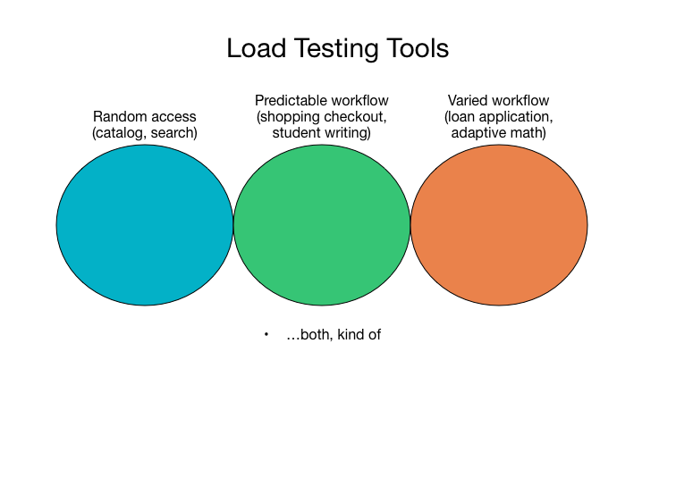

Load Testing: Finding a workable balance
Chris Winters (@cwinters) - Turnitin / Lightside Labs


Pittsburgh Techfest 2015 - goo.gl/MTZId4
Black magic
Is it?
A story
Goal: Learn enough to get by
Run through some basics, strengths of different tools,
describe a gap in them and show an approach for generating
and testing load.

Stress test
Fun image here

Approaching simulation
Fun image here, maybe Public/images/crazy_complicated_process.gif?

Session-based simulation
Fun image here